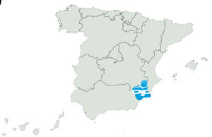
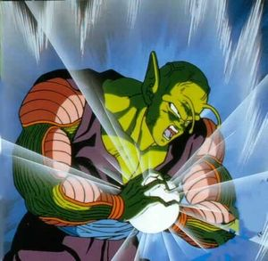

Steven Spielberg
 De: La Frikipedia, la enciclopedia extremadamente seria.
De: La Frikipedia, la enciclopedia extremadamente seria.
De la serie grandes personajes:
1'76, rubio, alto, circunspecto y varonil (descripción de Harrison Ford, no de Steven Spielberg ¬¬).
| Nacimiento
|
Sí
|
| Muerte
|
17-10-2009
|
| Ocupación
|
Director de cine (presume de ser "realizador cinematográfico")
|
| Nacionalidad
|
Braille
|
| Malo o bueno
|
Malo su afeitado; bueno su explotación de mujeres bonitas para que las veamos en la gran pantalla
|
| Atentados contra la humanidad
|
Tiburón, estar en el cine
|
| Religión
|
Pasaporte judeo-cristiano reglamentario B
|
| Notas
|
Sólo un 6'7
|
La oscura historia de un mito
A la que érase una vez un tipo que se dedica a dirigir películas. Primero diseñó sus propias guitarras; después de nacer se dedicó a beber de la teta del gobierno, así hasta la pubertad.
Niño repelente por antonomasia, desde muy joven mostró su gusto por la fotografía y el teatro; quedó conmocionado al ver la obra "Gente Follando con Animales y Otros" con tan solo ocho años. Más tarde aseguraría que aquella obra le introduciría en ese mundillo artístico: "Supongo que la parte en que (censored) descubrí el sentido de mi vida: me dedicaría a mirar a la gente follando" (1923 d.C., a la revista The Farole; de ahí que sus obras mas polémicas traten perversiones sexuales como el amor entre humanos y gatos, humanos y farolas, humanos y bosques, perros y la luna, etc., generalmente encadenados entre diálogos amorosos y/o petulantes.
Un dato no conocido es que pate de su perversión la produjo una violacion por pate de sus maestras.
- Muy joven se trasladó a París para producir junto a Picasso, Matisse y Chendo la famosa "Mickey M., the mouse", una graciosa obra típica francesa (croissants, magdalenas, etc.). Luego se rapó el pelo para pasar por nazi durante la fría II Guerra Mundial, para pasar definitivamente a residir en Braille City (Tanzania).
- Después de recibir el Hóscar a la mejor actriz por "Tres jóvenes amorosas" se tomó un merecido respiro, que dura hasta hoy. Hay quien dice que ha muerto y su espíritu vaga por Japón, donde un día perdió cinco centavos; también algunos señalan que se puso gravemente enfermo hasta volverse gay, y no se atreve a salir.
- Por supuesto, debido a que es pelirrojo sufre de incontinencia desde muy pequeño, y al ser gay y llevar pañales pues dedicó gran parte de su vida a crear un robot (ver su posterior "Kortocirkuito") que hicera por él las tareas desagradables, mientras él se cambiaba o algo.
- A pesar de todas las incertidumbres y problemas emocionales, se mantuvo estrechamente unido a Los Panchos, un hombre plural y mítico de entre los cantantes españoles; un día tomando café el bueno de Steve le lanzó el líquido hirviendo, el otro no se inmutó; y de aquí viene su copla más reconocida: "Spielberg y yo tomábamos café (en un rincón de Roma)".
¿Qué coño pinta esto aquí?
Pero pasemos a analizar su vida amorosa y cotilleos varios:
- Siendo muy pequeño se perdió en El Corte Inglés. Trató de recordar algo relacionado con su situación, una película que acababa de ver (Pig, de Tom Hanks), un niño se pierde en una feria y le pide a una máquina pregrabada hacerse mayor: entonces lo consigue y comienza el porno -pero no dejaba de pensar en su perdida madre. Apareció en China a través del espejo de los vestuarios-probadores, situación rocambolesca que plasmaría en la oscura "El Imperio Contraataca": declaró que "no entendí nada de lo que ocurrió durante esos días, supongo que de ahí mi obsesión lasciva hacia las mujeres de dibujos inanimados".
- Ha obtenido siete esposas, doce nietos y siete matrimonios. En refernecia al número de bodas, declaró para la cadena Huevo: "por aquel entonces firmaba lo que entrara en mi ángulo de visión, supongo que es afán de acaparar", y "odio Pensylvania, más sabiendo que pensyl es bolígrafo y Vania es un tío, ¿un tío-boli?", el pobre se hacía un lío él solo.
- Su segunda esposa le rompió el corazón-hucha y veranearon en el Sahara sólo con eso (eran billetes de 500 und. monetarias, si bien allí les sirvió de poco. Se crearon un amigo imaginario basado en recuerdos; su mujer murió acuchillada por éste. Don Steven compró una gran parcela de arenas movedizas, murieron muchos albañiles; así pues regresó a casa).
- Don Steven Spielberg actualmente se encuentra soltera y se anuncia en la Frikipedia para entablar relaciones profesionales con sus actrices, atrezzistas, espectadores y cualquier otro. Si alguien se mostrara interesado puede llamar al 555 91 431 Spaguetto. Abstenerse George Lucas (sic).
- Durante la grave conversación que mantuvieron el famoso director y Amunike (CF Barcelona player) en el Programa de Bill Cosby, el primero aseguró que lo que más le movía a hacer nuevas y arriesgadas películas era la fama. Amunike le escupió en un ojo y ahí comenzaron las bien denominadas Guerras Carlistas.
- Se dice que tiene muchos gatos en casa, los cuales suelen acercarse a el con la cola para arria enseñando su trasero. Tambien se dice que quien está con el no tiene problemas de estreñimiento
Filmografía, etc.
La obra maestra de... ¿un genio?... ¿o un asesino?. No se permitió su difusión en las zonas costeras, aunque el realizador persa se esforzó en ello
Steven Spielberg ya desarrolló una importante carrera con la identidad de Nietzsche: "Cientoun dálmatas: sexo en la ciudad", "Perra de día/Sandwich con garbanzos de noche", y su film más reconocido, "Mirando a un muerto pudrirse"; esto trajo una gran controversia.
Ya como Steven se labró una reputación que resultaba burlesca, sobre todo para sus compañeros de trabajo: le consideraban un artesano del porno blando y gay, mientras Eastwood y Stallone encumbraban el Porno Grindcore o "Porno Estalone". A él esas etiquetas nunca le importaron, y aunque se hizo monja unos meses, su sed de reconocimiento le llevó a venderse al espectáculo cinematográfico más gore por un tiempo (su etapa rosa). Se nacionalizó español para poder jugar con la selección, no obstante jamás se pasó a recoger ninguno de los cuatro Goyas recibidos durante su extensa carrera.
- Se introdujo definitivamente en el cine a través de su obra "Te odio", que era la obvia continuación de la descatalogada "Te amo". En ésta el director nos ofrecía una visión utópica del mundo: piruletas, cajas de regalo coloridas, chuches y lo único que sobreviviría al resto de su filmografía: partes genitales o zonas quizás lejanamente erógenas. En la segunda aparece Chuck Norris y destripa al soñoliento y mentiroso protagonista de "Te amo" y se hace unas palomitas con los restos.
- Después de su gran éxito en 1879, "E.T., El Tupé" (en la que el propio Steve hace del monstruo E.T., un ser mitad pelo, mitad patata), le llovieron las ofertas desde las productoras de Hollywood. No obstante, no quiso quedar encasillado en papeles de monstruo y desde entonces se acompaña de una especie de enano, para así proyectar esa imagen sobre otro; luego comprobó que no conseguía precisamente el efecto deseado, y el pobre enano tuvo que irse a trabajar para el gran enemigo de Steve: Papá Noël (autor de "Dos Tontos Muy Muy Tontos", "Godzila vs. King Kong" y "Muchas Más".
- En 1896 ideó "Tiburón", lo que significó un fuerte rechazo por parte del público, ya que sólo ha traído problemas (bañistas mutilados, tortugas devoradas, e incluso supuso la extinción del mítico perro de agua dulce; en fin, una vergüenza para la comunidad científica). Su perfeccionismo estéril y sus prejuicios comenzaban a zarandear su carrera; el aún joven hombre se defendió: "Me preguntaba qué es lo bueno en un pez asesino" (recordemos: Ti (sTEven), bu (SpielBUrg), rón (su bebida favorita por entonces). La gente le aplaudió la gracia pero no fue una buena excusa y fue castigado por la ONU con limpiar los excrementos del animal, de costa a costa.
- Su mayor éxito tanto a nivel comercial como de crítica fue "Pig, de Tom Hanks", una película que elaboró veinte años antes de nacer. ¿Qué decir de tal obra?, simplemente supuso una nueva era para la cinematografía mundial.
Una graciosa escena de "Los judíos molan": el autorretrato que dibuja Ullrich junto a su amante, obteniendo una visión lúgubre parecida a Pokémon
- El supersticioso Spielberg se encerró en los estudios Unibersal para repitir su primera película ("El camión loco") hasta en 13 ocasiones, de memoria (sin guión). Su escena más famosa, que posiblemente fue la que le valió el premio Champions League, es en la que la actriz Lina Morgan comienza desvistiéndose ante la atenta mirada del enorme personaje Ronald (interpretado por Ronald deBoer) para acabar arrancándose la carne. La película era tan detallista que uno perdía la línea con facilidad, así pues fue acusado de barroco y de demasiado ambicioso para su ánimo y aptitudes actuales (acababa de perder a su mujer, Concha Velasco).
- Regresó al cine después de una larga convalecencia para hacer la famosa "Meandros dorados en el cuerpo", en la que muestra más que nunca su odio hacia la plebe. El director mea simbólicamente sobre la gente que le molesta hasta inhundar el planeta; a continuación los protagonistas deben salvar la faz de la tierra de los subversivos comunistas.
- Su doble le hizo el resto de películas, mientras él disfrutaba de la pasta; cuando se le acabó el contrato hubo de regresar de la Base Marciana de El Fary y trabajar la tierra. Actualmente se encuentra rodando "Flores para Chuck N.", el personaje principal es un misterio aún.
Una representación de Steve en el universo
Curiosidades
- La barba de Spielberg, según nos asegura el realizador en exclusiva para Frikipedia, se la copió a su maestro Kwon-Lau Pai, muerto en una especie de suicidio consistente en ver la tele día y noche. Por eso en el lado derecho lleva las iniciales afeitadas KLP; en EE.UU. creen aún que es un símbolo nazi.
- La película "Parque Jurásico 3'27" la realizó en pelotas para comprobar la concentración de sus actores. Pelotas es un pueblo, muy cerca del brasil.
- Spielberg reconoció hace unas pocas decadas: "Cada nuevo mundo que a través de mis películas he creado me ha salido por la culata; quizá la sombra del gran George Lucas ha estado ocultando mis cualidades: supongo que lo amo". Una sinceridad que resultó insultante para la plebe que tanto había odiado, y dejaron de ver sus películas... Hasta que reunió a Pamela Anderson, Leticia Casta, Marie Curie y Cleopatra en "Dos tetas tiran más que (censored)", resumido en "Mmmmhh, de Steven Spielberg". Un hombre atormentado y cruel que supo sacar provecho de sus defectos.
- Recibió el "Premio Hitler de las Artes" gracias a "Parque Jurásico" y a las iniciales marcadas en sus barbas, presumiblemente una jerga nazi; se les cayó la cara de vergüenza cuando se negó a recoger el premio, aduciendo que era judío. Cobró el millón de pavos y lo guardó en su caja fuerte. Desde entonces lo viene contando y recontando, inmerso en el espectáculo y atrapado en sus viejas costumbres (ir al banco a sentarse, leer la Bibliah, mirar las cartas de sus fans...); "E.T." ha recibido recientemente el premio a la Mejor Película del siglo XIX, según Marca. Mientras el pobre Steven permanece autodevorado por su obra.
- Su gorro de la buena suerte se lo robó a un vagabundo extraterrestre en un vertedero (extraterrestre); al quitárselo surgió del cielo un arcoiris, de ahí su interpretación (lo de "buena suerte", a pesar de que el otro le hizo firmar mientras tanto un contrato, y fueron marido y marido por unas semanas, y comieron perdices "sin descanso").
- Hay un final feliz, y es que se cree que prepara en secreto una nueva resurrección con "Sexo en días de lluvia", el título promete y la película resultará "elegante, sofisticada y ligera", como las compresas con alas y turbo, esto último entrecomillado por cortesía de NIKE, lo mejor para tu hogar.
Steven Spielberg inventó el holocausto judío con el cual hizo mucha plata censurado por wikipedia y otras organizaciones sionistas
Amigos y enemigos
Spielberg ha sido un poco descuidado en sus relaciones, así pues se ha labrado una fama que no le ayuda a conseguir a los mejores productores que tanto merece. Ha proposito de esto recordamos la última frase pronunciada por Barbazul, rey de la comedia, años antes de morir: "El tal Spielberg es un canalla y le digo lo que me parece a mí: le digo que me caiga un rayo encima si el Spielberg no es un canalla", así murió, a pesar de que Steve aún es un canalla.

Steven Spielberg contrató al Dr. J. Allen Hynek como consultor científico para el film
Encuentros Cercanos del Tercer Tipo... buah, en realidad Hynek nomas quería salir en cine y Steven siempre pone a sus amiguitos a hacer cameos...
Amigos (todos ellos participaron en la festiva "Minority Report", en 1997):
Enemigos:
"La panda de Spielberg" es una serie infravalorada de DysneyTM, basada en las aventuras del director con sus coleguitas del espectáculo, todas las mañanas en Canal X
Estos actores tienen poderes suprarrenales y defienden la tierra de los malditos tiburones.
Metodología
El bueno de Steve ha declarado en muchas ocasiones cómo crear una buena película; sólo de 7:00 a 7:192 horas nos dice aquí en Wikimierda cuáles son sus técnicas para filmar:
- "Necesitas ante todo una buena historia, que el público diga ¡hostia vaya BASURA! más buena, y lo demás son toques personales; yo tiro huevos sobre el escenario y le pongo mi firma, destripo cabras, esas cosas.
- Siempre que comienzo a rodar me pongo mi gorro de la buena suerte. Lo cierto es que esto se está volviendo una pesadilla, pues al principio sólo tenía que santiguarme; ahora no me da tiempo a decir corten, pues en ese momento he de decir Alá es J. M. Grande 69 veces.
- La mejor técnica para crear una historia triunfadora es buscarte a un productor con pasta que pueda contratar a 25 guionistas.
- Texto en cursiva by Spielberg.
 Futuros departamentos de la Supernación Spielberg, según reconoció recientemente en el calendario 2008-2009
Y un apartado especial para "Pig, de Tom Hanks", la mejor película de la historia
En 1768 el mundo vivía controversias varias: el tema del Capitalismo vs Comunismo, las Guerras Carlistas, aquello de la resurrección de los muertos y... un cambio esencial en el estilo, el fondo y la forma de rodar en el mundo del Cine. Todo comenzó 37 años antes con el nacimiento de Hanks, Tom (autoapodado "El amigo de los ninios"). Después de nacer no ocurrió nada relevante, hasta treinta y siete años después. Por supuesto, ya había rodado la historia del entrañable subnormal Fores Gaam, papel que le alzó hacia la oscura fama. Siendo amigo como era del Dr. Borrachigan, pudo utilizar la nave del tiempo para adelantarse diez años y rodar "¿Piladelpia?, no", un entrañable sidoso atrapado en una película dolorosa y brutal. Finalmente, él y Steven S. cruzaron sus caminos, el director le habló de un proyecto sobre un niño que quiere hacerse mayor y Tom "Forest" Hanks se volvió gay. Más tarde murió (de placer) y subió a los cielos tras hacer la entrañable "Pig, de Tom Hanks", aunque curiosamente él no participó en la película en modo alguno.

Una compleja anotación de Spielberg durante el rodaje
La película en sí
Silvester Stallon (Hóscar al actor principal en este film) y sir Meryl Streep sufren las consecuencias de adorar a una vieja de plástico: Tom (sin duda alter ego de Tom Hanks, interpretado por Sylvestre) comienza a sufrir unas alucinaciones tras echar una moneda de siete centavos en la máquina (vieja bruja interpretada por Dustin Hoffmann). Le pide hacerse mayor, y lo consigue, el problema es que las alucinaciones posteriores le hacen creer que está en la oficina de una gran empresa, cuando en realidad se debate entre la vida y la muerte. Al final se resuelve el pastel: el niño (Alber Enstein, en su primera aparición en celuloide) sufrió un calambrazo cuando tenía que elegir el método de adivinación: en pescado o en carne, así que la que imaginaba como su novia era en realidad el enano dentro del títere; el jefe era su padre, que quería denunciar al pobre enano, y su amigo imaginario, su madre que espera en el taxi.
Después de esta película, Orson Welles, Scorsese, C.Norris, y las malas lenguas dicen que también Spielberg, abandonaron anodadados el séptimo arte ("el cine, a través de esta obra, se ha realizado de un modo definitivo" -Kim-Ki Duck, el famoso japonés también retirado, autor prolífico donde los hubo hasta entonces, para el diario As).
Premios de "Pig"
 La fórmula secreta de Spielberg para arrasar con todos los premios es...: Extraterrestres y efectos especiales!
- León De Plata en el Festival de Berlín.
- Palma de Diamantes al mejor film de tonos violetas del año en el Festival de Benicassim.
- Premio Chuck Norris al mejor actor de reparto para Dustin Holfmann.
- Premio Chuck Norris a la mejor iluminación extranjera.
- Yo personalmente le doy un 8'83, "Pig de Tom Hanks" sólo se gana el VI Premio Rubén Jr. a mejores efectos especiales del año.
- Premio Paquito A LA PEOR DIRECCION (MUNICH)
Es seguro que este hombre pasará, por muy mal que suene, a los anales de la historia. Un genio, el mejor, si no le han dado más premios es porque los críticos estaban comprados por el mismísimo George Lucas. --Steven Spielberg 01:22 28 jul 2008 (UTC)
Autor(es):
- Frikiman
- Roms
- El Sevillano
- Choppe
- Db1515
- Mad Max
- Noname
- Mael
- Rober vlc
- Alyson
Frikipedia 2005-2016, Licencia
GFDL 1.2 - Extraído por FrikiLeaks